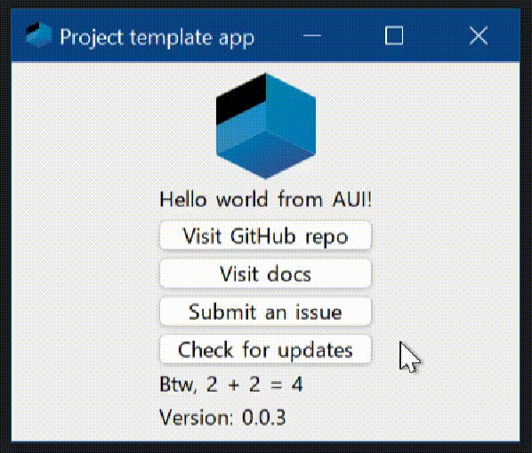
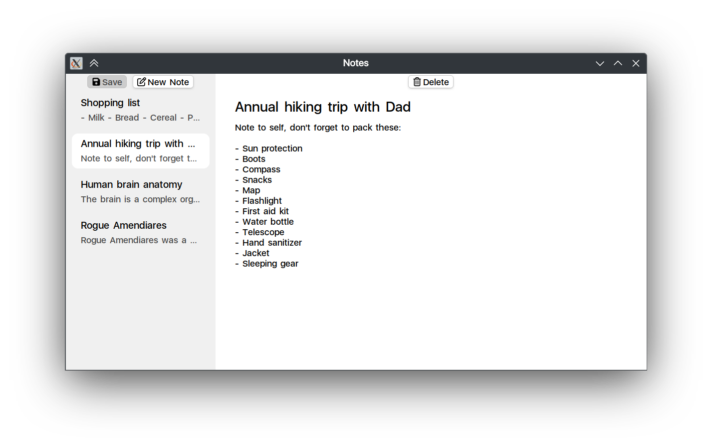
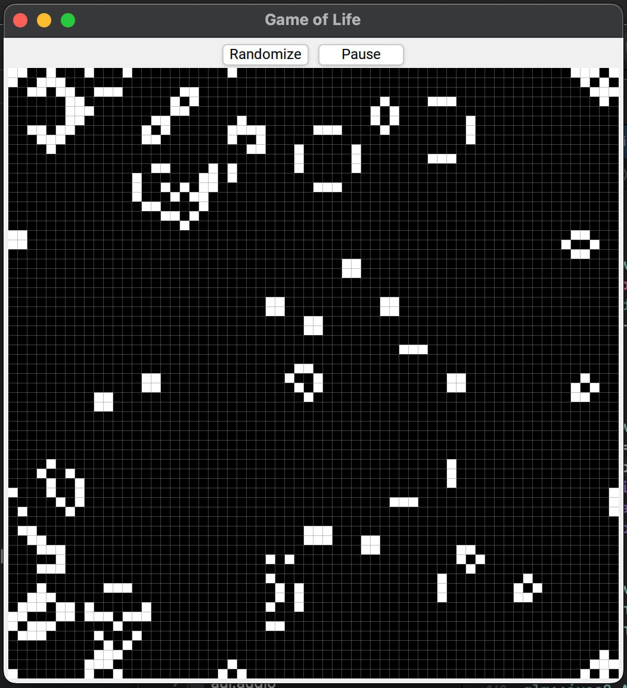
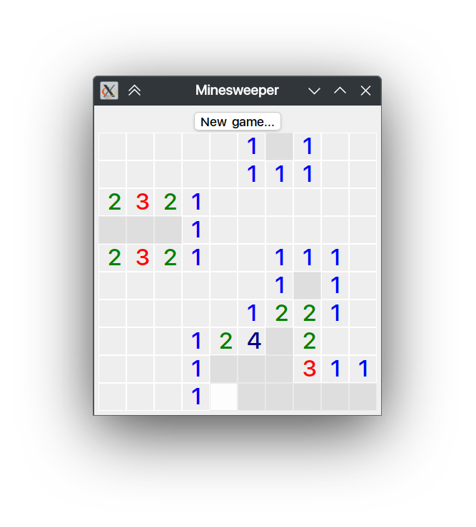
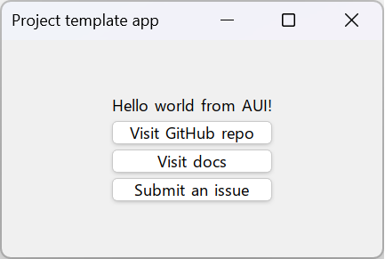
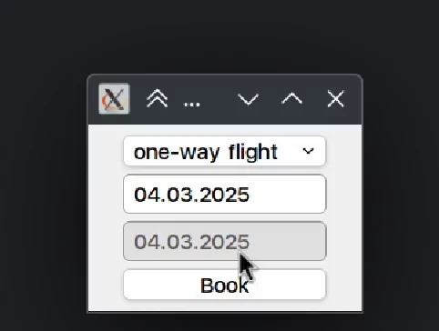
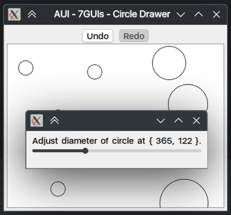
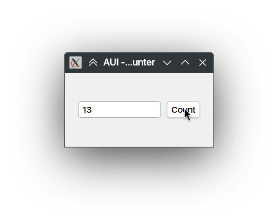
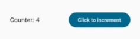

Examples#
This document lists a collection of code samples and tutorials designed to help both newcomers and experienced developers with AUI Framework app development. These projects cover diversity of topics, from fundamental views usage through to complete application assembly.
Building the Examples#
To build these examples, simply clone AUI repository and configure CMake with
-DAUI_BUILD_EXAMPLES=TRUE:
git clone https://github.com/aui-framework/aui
cd aui
mkdir build
cd build
cmake .. -DAUI_BUILD_EXAMPLES=TRUE -GNinja
cmake --build . --parallel
cd bin
# launch any program
./aui.example.views
Some of these examples are located outside AUI's build tree; such examples should be compiled as regular CMake projects.
App#
These examples typically go beyond single-file projects and delve into more substantial applications that showcase how multiple techniques can be integrated to create nearly production-ready applications. Each example not only demonstrates specific features of the AUI Framework but also covers practical aspects such as dependency management, data binding and user interface customization.
| Name | Description |
|---|---|
| [# App Template ⚡ | |
| ](app-template.md) | GitHub-hosted app project with CI/CD building, testing, releasing, auto updating, code quality checking and more.  ## Source Code This example is located outside AUI's source tree. Checkout its repository. |
| [# Fractal Example | |
| ](fractal-example.md) | Fractal viewer application demonstrating usage of custom shaders.  If you are familiar with OpenGL, you can use custom shaders with AUI. In this example, we're using such shader to display a GPU-computed Mandelbrot set. If you are familiar with OpenGL, you can use custom shaders with AUI. In this example, we're using such shader to display a GPU-computed Mandelbrot set. |
| [# Notes App | |
| ](notes-app.md) | Note taking app that demonstrates usage of AListModel, AProperty, user data saving and loading.  The functionality includes loading, saving, creating and deleting notes, as well as marking the UI state as dirty when changes are made. ## Models Note struct describes a note: @dontinclude examples/app/notes/src/main.cpp @skip struct Note @until }; The JSON representation is described as follows: @line AJSON ## MainWindow class The MainWindow class is responsible for managing the overall view and logic related to notes. ### Fields - mNotes: a member that holds a list of notes. - mCurrentNote: a property holding a pointer to the currently selected note. - mDirty: a boolean property indicating whether there are unsaved changes in the application. ### Methods - load(): loads notes from a JSON file. - save(): saves the current list of notes to a JSON file. Also resets the dirty state. - newNote(): creates a new note with a default title and adds it to the list of notes. Sets this note as the currently selected note. - deleteCurrentNote(): deletes the current note, if one is selected. Prompts the user for confirmation before proceeding with deletion. - markDirty(): marks the application state as dirty when changes made that require saving. Such a simple operation is extracted to a dedicated method, so the signals can be easily connected to. @skip markDirty() @until } ## UI Components and Layout @dontinclude examples/app/notes/src/main.cpp - TitleTextArea: derivative of ATextArea that focuses next text area when Enter is pressed. @skip TitleTextArea @until }; - 'New note' button: creates a new note using newNote(). - 'Save' button: saves application data via save() method. It's enabled state is controlled by mDirty property. - 'Delete' button: deletes current note via deleteCurrentNote() method. It's enabled state is controlled by mCurrentNote property. - Previews: contains dynamically generated previews of all notes, allowing users to select the one they want to view or edit. notePreview() function generates a single preview for a note. - Main area of the application is occupied by note editor generated by noteEditor() function. noteEditor() consists of 2 text areas - one for title, one for contents. |
| [# Game of Life | |
| ](game-of-life.md) | Game of Life implementation that uses advanced large dynamic data rendering techniques such as ITexture, AImage to be GPU friendly. The computation is performed in AThreadPool.  Conway's Game of Life, a cellular automaton devised by the mathematician John Conway. The game consists of a grid where each cell can be either alive or dead, and its state evolves over time according to simple rules based on the states of adjacent cells. > Every cell interacts with its eight neighbours, which are the cells that are horizontally, vertically, or diagonally adjacent. At each step in time, the following transitions occur: > > - Any live cell with fewer than two live neighbours dies, as if by underpopulation. > - Any live cell with two or three live neighbours lives on to the next generation. > - Any live cell with more than three live neighbours dies, as if by overpopulation. > - Any dead cell with exactly three live neighbours becomes a live cell, as if by reproduction. > > Wikipedia ## Cells Represents the grid of cells with their states (CellState::ALIVE or CellState::DEAD). It has methods for initialization and randomization, as well as accessors to get the size and state of individual cells. Computations are handled asynchronously by an AThreadPool, improving performance during state transitions or rule computations in large grids. @dontinclude examples/app/game_of_life/src/main.cpp @skip class Cells @until /// end ## CellsView Visualizes the grid using a texture. It updates the texture when cells change their states. When the pointer is pressed on the view, it toggles the state of the cell under the cursor. The grid is composed by lines in drawGrid lambda. These lines are then passed to the rendering, making a single draw call to draw the grid. @skip class CellsView @until /// end ## GameOfLifeWindow This is the main window for the Game of Life application. It sets up the UI with buttons to randomize the grid and start/pause the game, as well as a central area where the CellsView is displayed. @skip class GameOfLifeWindow @until /// end |
| [# Minesweeper Game | |
| ](minesweeper-game.md) | Minesweeper game implementation driven by ass.  ## Game Logic The entire game logic is located in MinesweeperWindow.cpp. ### Initialization The game starts with beginGame function. beginGame Initializes a new Minesweeper game with specified dimensions and bomb count. Clears any previous game state, sets up the grid layout, initializes cell views, connects click handlers for opening cells and flagging, and finally packs UI elements to be displayed. - Generates a grid with AGridLayout - Dynamically creates CellViews based on game data - Handles user events (left clicks and right clicks) ### Event handling As was mentioned, the game handles events by setting signal handlers on CellView. This is done inside setupEventHandlers. Here's a little breakdown: #### Toggle flag (right click) In a minesweeper game, right click toggles the flag. First, we check that game is not finished (mReveal), then we check if cell is open. Finally, we toggle the flag: As you can see, game data is represented by FieldCell enum: FieldCell is just a bitfield implemented thanks to AUI_ENUM_FLAG. #### Open cell (left click) Left click delegates cell opening logic to openCell which contain game-specific logic. ## Cell style In response to user's actions, the game updates its internal state. To visualize the state, updateCellViewStyle function is called. This method updates the style of a cell at coordinates (x, y) based on its state or any other conditions (e.g., game over, win/lose states). It triggers an event to let the framework know that custom styles need to be re-evaluated and applied accordingly. In game style sheets, a custom selector tied to CellView is used to display various cell states: Such selector is used in style sheets accordingly: Also, for reveal game state (on win/lose) there's an additional selector: RevealSelector and CellSelector are used together to show game results:  |
| [# AUI Telegram Client (AUIgram) | |
| ](aui-telegram-client-auigram.md) | Using AUI Framework from perspective of a Telegram client. This project shows how to solve typical problems of a UI application (i.e., dependency management, data binding, styling, asynchronous data loading, packaging, deploying).  ## Motivation/rationale We wanted some kind of project/repository to be as an example/reference project of a real life application built entirely with AUI. Telegram Client is a great example: - ## Motivation/rationale We wanted some kind of project/repository to be as an example/reference project of a real life application built entirely with AUI. Telegram Client is a great example: - tdlib, which is basis of every Telegram client, uses C++ - almost everyone is familiar with Telegram - there are many challenges for AUI, such as importing tdlib with aui.boot (spoiler: it does the job perfectly), asynchronous data loading, data binding, animations, assets, full support of Windows, macOS, Linux, Android, iOS. ## Source Code This example is located outside AUI's source tree. Checkout its repository. |
UI#
Various UI building samples.
| Name | Description |
|---|---|
| [# Backdrop | |
| ](backdrop.md) | Backdrop effects demo.  This example demonstrates how This example demonstrates how ass::Backdrop effects can be used to produce rich visuals that conform modern design principles. In this example, a combination of ass::Backdrop -enabled view and AScrollArea is used. To raise the ass::Backdrop above the AScrollArea, AStackedLayout layout is used. |
| [# Views Example | |
| ](views-example.md) | All-in-one views building example.  This example project is used to test various UI things. As framework was growing, this particular project is bloated with various components. At the moment, some efforts are performed to this application to split and categorize things up. This example project is used to test various UI things. As framework was growing, this particular project is bloated with various components. At the moment, some efforts are performed to this application to split and categorize things up. |
| [# AUI Contacts | |
| ](aui-contacts.md) | Usage of AUI_DECLARATIVE_FOR to make a contacts-like application.  UI is defined using a declarative syntax, where the structure and layout of the UI are specified as a series of function calls. The application uses an AProperty named UI is defined using a declarative syntax, where the structure and layout of the UI are specified as a series of function calls. The application uses an AProperty named mContacts to store a vector of contact objects. Each contact object has properties like displayName, note, etc. |
| [# Minimal UI Template with Assets | |
| ](minimal-ui-template-with-assets.md) | Minimal UI boilerplate template with AUI Assets. ## Source Code ### Project Structure mermaid graph TD A[project_template_assets_ui] --> B[CMakeLists.txt] A --> C[src/] C --> D[MainWindow.h] C --> E[MainWindow.cpp] C --> F[main.cpp] A --> G[assets/img/] G --> H[logo.svg] --- ### CMakeLists.txt cmake # Standard routine cmake_minimum_required(VERSION 3.16) project(project_template_assets_ui) set(AUI_VERSION v8.0.0-rc.8) # Use AUI.Boot file( DOWNLOAD https://raw.githubusercontent.com/aui-framework/aui/${AUI_VERSION}/aui.boot.cmake ${CMAKE_CURRENT_BINARY_DIR}/aui.boot.cmake) include(${CMAKE_CURRENT_BINARY_DIR}/aui.boot.cmake) # import AUI auib_import(aui https://github.com/aui-framework/aui COMPONENTS core views VERSION ${AUI_VERSION}) # Create the executable. This function automatically links all sources from the src/ folder, # creates CMake target and places the resulting executable to bin/ folder. aui_executable(${PROJECT_NAME}) # Link required libs aui_link(${PROJECT_NAME} PRIVATE aui::core aui::views) aui_compile_assets(${PROJECT_NAME}) ### src/MainWindow.h cpp #pragma once #include <AUI/Platform/AWindow.h> class MainWindow: public AWindow { public: MainWindow(); }; ### src/MainWindow.cpp cpp #include "MainWindow.h" #include <AUI/Util/UIBuildingHelpers.h> #include <AUI/View/ALabel.h> #include <AUI/View/AButton.h> #include <AUI/Platform/APlatform.h> #include <AUI/View/ADrawableView.h> using namespace declarative; MainWindow::MainWindow(): AWindow("Project template app", 300_dp, 200_dp) { setContents( Centered{ Vertical{ Centered { Icon { ":img/logo.svg" } with_style { FixedSize(64_dp) } }, Centered { Label { "Hello world from AUI!" } }, _new<AButton>("Visit GitHub repo").connect(&AView::clicked, this, [] { APlatform::openUrl("https://github.com/aui-framework/aui"); }), _new<AButton>("Visit docs").connect(&AView::clicked, this, [] { APlatform::openUrl("https://aui-framework.github.io/"); }), _new<AButton>("Submit an issue").connect(&AView::clicked, this, [] { APlatform::openUrl("https://github.com/aui-framework/aui/issues/new"); }), } } ); } ### src/main.cpp cpp #include <AUI/Platform/Entry.h> #include "MainWindow.h" AUI_ENTRY { _new<MainWindow>()->show(); return 0; }; This example is located outside AUI's source tree. Checkout its repository. |
| [# Infinite Lazy List | |
| ](infinite-lazy-list.md) | Usage of AUI_DECLARATIVE_FOR to make an infinite lazy list. This example demonstrates making an optimal infinite list. That is, when you infinitely scroll down to load new items, the older items are unloaded from memory. The "loading" action is performed on a worker thread and a delay is simulated by AThread::sleep. As a bonus, we've added a spinner to indicate that loading is in progress. In this example, we've used functional style and decomposition technique instead of making custom view classes. The idea is hide the implementation specifics of myLazyList that makes a basic AView in return. The overall state of produced lazy list object is controlled by list model. myLazyList is limited to specific type of model by intention. AUI does not provide some kind of generalization on its own. In fact, we're demonstrating the whole concept in less than 100 lines of code. You certainly can make a generalization that suits your project's needs. |
| [# Minimal UI Template | |
| ](minimal-ui-template.md) | Minimal UI boilerplate template.  ## Source Code ### Project Structure mermaid graph TD A[project_template_ui] --> B[CMakeLists.txt] A --> C[src/] C --> D[MainWindow.h] C --> E[MainWindow.cpp] C --> F[main.cpp] --- ### CMakeLists.txt cmake # Standard routine cmake_minimum_required(VERSION 3.16) project(project_template_ui) # Tip: in a production project don't use branch name, use a specific name tag (i.e. v1.1.1), # but for a sandbox project branch name is perfectly enough set(AUI_VERSION v8.0.0-rc.8) # Use AUI.Boot file( DOWNLOAD https://raw.githubusercontent.com/aui-framework/aui/${AUI_VERSION}/aui.boot.cmake ${CMAKE_CURRENT_BINARY_DIR}/aui.boot.cmake) include(${CMAKE_CURRENT_BINARY_DIR}/aui.boot.cmake) # import AUI auib_import(aui https://github.com/aui-framework/aui COMPONENTS core views VERSION ${AUI_VERSION}) # Create the executable. This function automatically links all sources from the src/ folder, # creates CMake target and places the resulting executable to bin/ folder. aui_executable(${PROJECT_NAME}) # Link required libs aui_link(${PROJECT_NAME} PRIVATE aui::core aui::views) ### src/MainWindow.h cpp #pragma once #include <AUI/Platform/AWindow.h> class MainWindow: public AWindow { public: MainWindow(); }; ### src/MainWindow.cpp cpp #include "MainWindow.h" #include <AUI/Util/UIBuildingHelpers.h> #include <AUI/View/ALabel.h> #include <AUI/View/AButton.h> #include <AUI/Platform/APlatform.h> using namespace declarative; MainWindow::MainWindow(): AWindow("Project template app", 300_dp, 200_dp) { setContents( Centered{ Vertical{ Centered { Label { "Hello world from AUI!" } }, _new<AButton>("Visit GitHub repo").connect(&AView::clicked, this, [] { APlatform::openUrl("https://github.com/aui-framework/aui"); }), _new<AButton>("Visit docs").connect(&AView::clicked, this, [] { APlatform::openUrl("https://aui-framework.github.io/"); }), _new<AButton>("Submit an issue").connect(&AView::clicked, this, [] { APlatform::openUrl("https://github.com/aui-framework/aui/issues/new"); }), } } ); } ### src/main.cpp cpp #include <AUI/Platform/Entry.h> #include "MainWindow.h" AUI_ENTRY { _new<MainWindow>()->show(); return 0; }; This example is located outside AUI's source tree. Checkout its repository. |
| [# Minimal UI Template XMake | |
| ](minimal-ui-template-xmake.md) | Minimal UI boilerplate template XMake. ## Source Code ### Project Structure mermaid graph TD A[project_template_ui_xmake] --> B[xmake.lua] A --> C[src/] C --> D[MainWindow.h] C --> E[MainWindow.cpp] C --> F[main.cpp] A --> G[.vscode/] G --> H[c_cpp_properties.json] --- ### xmake.lua ### src/MainWindow.h ### src/MainWindow.cpp ### src/main.cpp ### .vscode/c_cpp_properties.json |
Desktop#
Desktop-specific examples.
| Name | Description |
|---|---|
| [# Console Hello World Example | |
| ](console-hello-world-example.md) | Basic CLI Hello World application. |
| [# Prometheus Exporter Template | |
| ](prometheus-exporter-template.md) | Example of using aui.boot to pull Prometheus library. ## Source Code This example is located outside AUI's source tree. Checkout its repository. |
7GUIs#
7GUIs is a GUI toolkit benchmark that defines seven tasks representing typical challenges in GUI programming. In addition, 7GUIs provide a recommended set of evaluation dimensions. As such, implementations of these tasks can be compared side by side. AUI project provides its own implementations.
| Name | Description |
|---|---|
| [# 7GUIs CRUD | |
| ](7guis-crud.md) | Create/Read/Update/Delete example. Challenges: separating the domain and presentation logic, managing mutation, building a non-trivial layout. The task is to build a frame containing the following elements: a textfield Tprefix, a pair of textfields Tname and Tsurname, a listbox L, buttons BC, BU and BD and the three labels as seen in the screenshot. L presents a view of the data in the database that consists of a list of names. At most one entry can be selected in L at a time. By entering a string into Tprefix the user can filter the names whose surname start with the entered prefix—this should happen immediately without having to submit the prefix with enter. Clicking BC will append the resulting name from concatenating the strings in Tname and Tsurname to L. BU and BD are enabled iff an entry in L is selected. In contrast to BC, BU will not append the resulting name but instead replace the selected entry with the new name. BD will remove the selected entry. The layout is to be done like suggested in the screenshot. In particular, L must occupy all the remaining space. CRUD (Create, Read, Update and Delete) represents a typical graphical business application. The primary challenge is the separation of domain and presentation logic in the source code that is more or less forced on the implementer due to the ability to filter the view by a prefix. Traditionally, some form of MVC pattern is used to achieve the separation of domain and presentation logic. Also, the approach to managing the mutation of the list of names is tested. A good solution will have a good separation between the domain and presentation logic without much overhead (e.g. in the form of toolkit specific concepts or language/paradigm concepts), a mutation management that is fast but not error-prone and a natural representation of the layout (layout builders are allowed, of course, but would increase the overhead). |
| [# 7GUIs Flight Booker | |
| ](7guis-flight-booker.md) | Flight Booker.  Challenge: Constraints. The task is to build a frame containing a combobox C with the two options “one-way flight” and “return flight”, two textfields T1 and T2 representing the start and return date, respectively, and a button B for submitting the selected flight. T2 is enabled iff C’s value is “return flight”. When C has the value “return flight” and T2’s date is strictly before T1’s then B is disabled. When a non-disabled textfield T has an ill-formatted date then T is colored red and B is disabled. When clicking B a message is displayed informing the user of his selection (e.g. “You have booked a one-way flight on 04.04.2014.”). Initially, C has the value “one-way flight” and T1 as well as T2 have the same (arbitrary) date (it is implied that T2 is disabled). The focus of Flight Booker lies on modelling constraints between widgets on the one hand and modelling constraints within a widget on the other hand. Such constraints are very common in everyday interactions with GUI applications. A good solution for Flight Booker will make the constraints clear, succinct and explicit in the source code and not hidden behind a lot of scaffolding. ## Regex Library For validation in this example, we've chosen using regex technology, as it's fairly simple and extensible way to make parsers. Despite STL provides regex implementation, it varies from compiler to compiler, compiles the regex expression at runtime only, and some platforms may even lack builtin regex library. To avoid possible issues, custom implementation should be used. Although AUI does not provide a regex parser on its own, nothing stops you from using AUI.Boot in order to pull awesome 3rdparty implementation of your choice that suits your exact needs. For this example, we've chosen ctre, as it evaluates the regex expression at compile-time, emitting effective code, as if we were validating the string manually. |
| [# 7GUIs Cells | |
| ](7guis-cells.md) | Spreadsheet processor (Excel).  Challenges: change propagation, widget customization, implementing a more authentic/involved GUI application. The task is to create a simple but usable spreadsheet application. The spreadsheet should be scrollable. The rows should be numbered from 0 to 99 and the columns from A to Z. Double-clicking a cell C lets the user change C’s formula. After having finished editing the formula is parsed and evaluated and its updated value is shown in C. In addition, all cells which depend on C must be reevaluated. This process repeats until there are no more changes in the values of any cell ( change propagation). Note that one should not just recompute the value of every cell but only of those cells that depend on another cell’s changed value. If there is an already provided spreadsheet widget it should not be used. Instead, another similar widget (like JTable in Swing) should be customized to become a reusable spreadsheet widget. Cells is a more authentic and involved task that tests if a particular approach also scales to a somewhat bigger application. The two primary GUI-related challenges are intelligent propagation of changes and widget customization. Admittedly, there is a substantial part that is not necessarily very GUI-related but that is just the nature of a more authentic challenge. A good solution’s change propagation will not involve much effort and the customization of a widget should not prove too difficult. The domain-specific code is clearly separated from the GUI-specific code. The resulting spreadsheet widget is reusable. Challenges: change propagation, widget customization, implementing a more authentic/involved GUI application. The task is to create a simple but usable spreadsheet application. The spreadsheet should be scrollable. The rows should be numbered from 0 to 99 and the columns from A to Z. Double-clicking a cell C lets the user change C’s formula. After having finished editing the formula is parsed and evaluated and its updated value is shown in C. In addition, all cells which depend on C must be reevaluated. This process repeats until there are no more changes in the values of any cell ( change propagation). Note that one should not just recompute the value of every cell but only of those cells that depend on another cell’s changed value. If there is an already provided spreadsheet widget it should not be used. Instead, another similar widget (like JTable in Swing) should be customized to become a reusable spreadsheet widget. Cells is a more authentic and involved task that tests if a particular approach also scales to a somewhat bigger application. The two primary GUI-related challenges are intelligent propagation of changes and widget customization. Admittedly, there is a substantial part that is not necessarily very GUI-related but that is just the nature of a more authentic challenge. A good solution’s change propagation will not involve much effort and the customization of a widget should not prove too difficult. The domain-specific code is clearly separated from the GUI-specific code. The resulting spreadsheet widget is reusable. |
| [# 7GUIs Circle Drawer | |
| ](7guis-circle-drawer.md) | Undo, redo, dialog control.  Challenges: undo/redo, custom drawing, dialog control. The task is to build a frame containing an undo and redo button as well as a canvas area underneath. Left-clicking inside an empty area inside the canvas will create an unfilled circle with a fixed diameter whose center is the left-clicked point. The circle nearest to the mouse pointer such that the distance from its center to the pointer is less than its radius, if it exists, is filled with the color gray. The gray circle is the selected circle C. Right-clicking C will make a popup menu appear with one entry “Adjust diameter..”. Clicking on this entry will open another frame with a slider inside that adjusts the diameter of C. Changes are applied immediately. Closing this frame will mark the last diameter as significant for the undo/redo history. Clicking undo will undo the last significant change (i.e. circle creation or diameter adjustment). Clicking redo will reapply the last undoed change unless new changes were made by the user in the meantime. Circle Drawer’s goal is, among other things, to test how good the common challenge of implementing an undo/redo functionality for a GUI application can be solved. In an ideal solution the undo/redo functionality comes for free resp. just comes out as a natural consequence of the language / toolkit / paradigm. Moreover, Circle Drawer tests how dialog control, i.e. keeping the relevant context between several successive GUI interaction steps, is achieved in the source code. Last but not least, the ease of custom drawing is tested. |
| [# 7GUIs Temperature Converter | |
| ](7guis-temperature-converter.md) | Fahrenheit to Celsius and vice versa. Challenges: bidirectional data flow, user-provided text input. The task is to build a frame containing two textfields TC and TF representing the temperature in Celsius and Fahrenheit, respectively. Initially, both TC and TF are empty. When the user enters a numerical value into TC the corresponding value in TF is automatically updated and vice versa. When the user enters a non-numerical string into TC the value in TF is not updated and vice versa. The formula for converting a temperature C in Celsius into a temperature F in Fahrenheit is C = (F - 32) * (5/9) and the dual direction is F = C * (9/5) + 32. Temperature Converter increases the complexity of Counter by having bidirectional data flow between the Celsius and Fahrenheit inputs and the need to check the user input for validity. A good solution will make the bidirectional dependency very clear with minimal boilerplate code. ## Comparison to Jetpack Compose Here's implementation of the same app with Jetpack Compose: java package ... import ... class MainActivity : ComponentActivity() { override fun onCreate(savedInstanceState: Bundle?) { super.onCreate(savedInstanceState) enableEdgeToEdge() setContent { CounterTheme { Counter() } } } } @Composable fun TemperatureBiConverter() { var celsiusInputData by remember { mutableStateOf("0.0") } var fahrenheitInputData by remember { mutableStateOf("32.0") } Row( modifier = Modifier .fillMaxSize() .padding(horizontal = 8.dp), verticalAlignment = Alignment.CenterVertically, horizontalArrangement = Arrangement.SpaceBetween ) { OutlinedTextField( modifier = Modifier.weight(1f), value = celsiusInputData, onValueChange = { input -> celsiusInputData = input input.toFloatOrNull()?.also { fahrenheitInputData = (it * (9f / 5f) + 32f).toString() } }, label = { Text("Celsius") } ) Text( text = "=", fontSize = 18.sp, modifier = Modifier.padding(horizontal = 8.dp) ) OutlinedTextField( modifier = Modifier.weight(1f), value = fahrenheitInputData, onValueChange = { input -> fahrenheitInputData = input input.toFloatOrNull() ?.also { celsiusInputData = ((it - 32) * (5f / 9f)).toString() } }, label = { Text("Fahrenheit") } ) } } |
| [# 7GUIs Counter | |
| ](7guis-counter.md) | Simple counter.  Challenge: Understanding the basic ideas of a language/toolkit. The task is to build a frame containing a label or read-only textfield T and a button B. Initially, the value in T is “0” and each click of B increases the value in T by one. Counter serves as a gentle introduction to the basics of the language, paradigm and toolkit for one of the simplest GUI applications imaginable. Thus, Counter reveals the required scaffolding and how the very basic features work together to build a GUI application. A good solution will have almost no scaffolding. ## Comparison to Jetpack Compose Here's implementation of the same app with Jetpack Compose: java package ... import ... class MainActivity : ComponentActivity() { override fun onCreate(savedInstanceState: Bundle?) { super.onCreate(savedInstanceState) enableEdgeToEdge() setContent { CounterTheme { Counter() } } } } @Composable fun Counter() { var counter by remember { mutableIntStateOf(0) } Row( verticalAlignment = Alignment.CenterVertically, modifier = Modifier.fillMaxSize(), horizontalArrangement = Arrangement.SpaceAround ) { Text(text = "Counter $counter"), Button(onClick = { counter++ }) { Text(text = "Click to increment") } } }  |
| [# 7GUIs Timer | |
| ](7guis-timer.md) | Timer example. Challenges: concurrency, competing user/signal interactions, responsiveness. The task is to build a frame containing a gauge G for the elapsed time e, a label which shows the elapsed time as a numerical value, a slider S by which the duration d of the timer can be adjusted while the timer is running and a reset button R. Adjusting S must immediately reflect on d and not only when S is released. It follows that while moving S the filled amount of G will (usually) change immediately. When e ≥ d is true then the timer stops (and G will be full). If, thereafter, d is increased such that d > e will be true then the timer restarts to tick until e ≥ d is true again. Clicking R will reset e to zero. Timer deals with concurrency in the sense that a timer process that updates the elapsed time runs concurrently to the user’s interactions with the GUI application. This also means that the solution to competing user and signal interactions is tested. The fact that slider adjustments must be reflected immediately moreover tests the responsiveness of the solution. A good solution will make it clear that the signal is a timer tick and, as always, has not much scaffolding. |